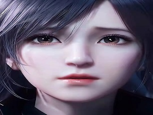
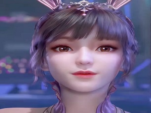

国漫简介
以斗罗大陆为名，缔结三舞之感情，以绝世唐门为媒，牵起浩桐之红线，以龙王传说为引，结束麟月之悲情， 以终极斗罗为梦,期盼宇秀得真情，前尘巴蜀虽如梦，此生不悔入唐门，手握日月摘星辰，世间无我这般人.
秦时明月
原著者：温世仁百家争鸣的中华古文化在此激烈冲突碰撞，大时代恢宏磅礴的战争场面在连天烽火中震撼重现，江湖儿女的侠骨柔情于动荡乱世间绽放光华……少年天明如杂草般顽强生存于时代变革的乱世之中，面对强暴的政权、险恶的敌人，勇敢地与侠士们进行反抗，经历了一段不俗的遭遇。剧情融武侠、历史、奇幻于一体，融入众多中国元素，引领观众亲历两千年前风起云涌、瑰丽多姿的古中国世界，在浓郁的中国风中注入鲜明的时代感。
天行九歌
原著者:长河暮日面对着强邻秦国的步步紧逼，危若累卵的韩国却依然黑幕重重。大将军姬无夜依靠手下“夜幕四凶将”，垄断了韩国的军事、政治、经济……几乎一切领域， 并且有计划地扑灭所有可能带领韩国复兴的希望。面对如此残酷的局面，从齐国学成归来的王室子弟韩非，凭着惊才绝艳的智慧，与鬼谷传人卫庄联手组建了体现法家精神的“流沙”组织， 带领张良、紫女等人与姬无夜的黑暗势力进行了惊心动魄的对决。
武庚纪
原著者：郑健和纣王断然拒绝“天”的神谕，将之投入火炬里烧毁，公然发布反抗神族之宣言。神族之主——“天”为此勃然大怒，带领神族的天间六部与周国军队来讨伐大商国。纣王与远古神兽不死鸟分享血与肉体，得到了原本属于神族才拥有的原始界神力。可惜还是不敌“天”之无色界神力，后功败垂成。纣王之子武庚得到母亲妲己之帮助，逃过神族的追捕。后来沦落为采矿工厂的奴隶， 武庚从不赞同父亲的做法到体验到神族所带来的不平等待遇，立志颠覆神族。
天谕
原著者:江南构架自古神诞生，开天辟地，至盛世流转，世间百态。时值现世，人族，汐族，翼族，各个种族一起生活在这片大陆，名为云垂大陆。 在风起云涌的云垂大陆上，黄帝传人玄极为了镇压妖魔而踏上了寻找四方神器之路，新一代的五帝传人，黄帝，赤帝，黑帝，青帝，白帝，再度聚集，天降神谕，风云再起。灵兽蜃与玄水祭司萤情同姐弟，然而蜃顽劣之极，误入魔道，以至生灵涂炭。萤为救天下苍生与汐族协力将蜃魔哄骗封印。封印之时，萤一念之仁，为蜃魔留下一线生机。
斗罗大陆
原著者:唐家三少唐门外门弟子唐三，因偷学内门绝学为唐门所不容，跳崖明志时却发现没有死，反而以另外一个身份来到了另一个世界，一个属于武魂的世界，名叫斗罗大陆。这里没有魔法，没有斗气，没有武术，却有神奇的武魂。这里的每个人，都会在武魂殿中令武魂觉醒。武魂有动物，有植物，有器物，武魂可以辅助人们的日常生活。而其中一些特别出色的武魂却可以用来修炼并进行战斗，这个职业，是斗罗大陆上为强大也是荣耀的职业“魂师”。
吞噬星空
原著者:我爱吃西红柿本作品以少年罗峰为主角，讲述了他自学生时代，便想要守护家人和友人，并在他人的感染下，毅然选择成为一名武者，终在不断的艰苦磨砺下，不断发掘自身潜能，得到了能力提升和自我价值的认可。同时，本片中，全人类武者团结一致，为了守护人类家园，为了人类更好的生存与发展，联手对付怪兽，展现了守护家园、展望和平、团队协作、互助互爱、战胜邪恶、克服困难的宝贵世界观和价值观。
天宝伏妖录
原著者:非天夜翔天宝十二载，不谙世事的英俊少年孔鸿俊，肩负三项重任离开太行山上的曜金宫，来到歌舞升平、锦绣繁华的长安。孔鸿俊初入大唐驱魔司，顶头上司竟是不久前交过手的龙武军将领李景珑。而他竟然失手将陈氏心灯打碎，心灯进入了李景珑的体内。
梦幻猫咪屋
原著者:未知幸福大街上有个特别的“梦幻猫咪屋”，里面有从世界各地搜集而来的猫咪玩具。本片围绕着“梦幻猫咪屋”中可爱的猫咪玩具“琉璃”和它的猫咪玩具朋友们展开，在童话般唯美温馨的意境中，为观众们娓娓道来猫咪玩具们各自曲折的经历，以及它们曾经的主人故事，分享猫咪玩具相处时各种或是搞笑或是感人的小故事
国漫
一角
请静静的欣赏这美丽的画面,
你会发现国漫的优美之处。
斗罗大陆第205集已经播出
这一集主要围绕唐三和武魂帝国的降魔斗罗的对决展开
从下一集也即是206集预告来看，降魔斗罗很可能没有死，因为他出现在了武魂帝国的供奉殿。当然有人坚持认为降魔斗罗死了，并说下一集预告不过是回忆，讲的是之前的剧情，这也不是没有这个可能。不过个人更倾向于降魔斗罗还活着，为什么呢？
秀丽
美角
不知道你会对哪一位男主角或者女主角产生兴趣
秀一下国漫3D建模的强大之处
-
罗峰
来自吞噬星空罗峰，是我吃西红柿所著未来世界类科幻小说《吞噬星空》及其衍生作品中的男主角， 《雪鹰领主》中的客串角色。
-
唐三
来自斗罗大陆唐三,唐家三少所著异世大陆类玄幻小说《斗罗大陆》系列中的男主角。 前世为唐门外门弟子，因偷学内门绝学《玄天宝录》，为唐门所不容，跳崖明志，却来到了另一个世界——斗罗大陆
-

荆天明
来自秦时明月荆天明，中国动画《秦时明月》系列中的男一号，原型为小说《秦时明月》系列的男主角荆天明。
-
小洛
来自天谕小洛，网易盘古工作室研发的大型3D幻想MMOPRG游戏《天谕》和中国3D玄幻动画《天谕》中的男性角色。双男主之一。
-
武庚
来自武庚纪武庚，中国香港漫画《封神纪》及改编3D动画《武庚纪》中的男主角，原型为商纣王之子武庚。
-
陆许
来自天宝伏妖录陆许是晋江作者非天夜翔的小说作品《天宝伏妖录》及其衍生作品角色，第二部出场的人物。
-

徐欣
来自吞噬星空徐欣，是我吃西红柿著作的网络小说《吞噬星空》及其衍生作品中的女主角，为罗峰所爱之人。
-
白龙
来自武庚纪白龙是中国香港漫画《封神纪》及其衍生作品中的女性角色，又称“句芒”（动画原创）。
-
高月
来自秦时明月高月，明日工作室原著台湾武侠小说《秦时明月》系列中的原创角色，为色彩丰富的女主角。
-

小舞
来自斗罗大陆小舞，唐家三少所著异世大陆类玄幻小说《斗罗大陆》系列的女主角，十万年魂兽柔骨兔重修化形成人
-
焰灵姬
来自天行九歌焰灵姬，是中国动画《天行九歌》系列中的原创女性角色，是赤眉龙蛇天泽的下属。
-
白菜
来自武庚纪白菜，中国香港漫画《封神纪》及中国内地改编3D动画《武庚纪》的女主角，武庚深爱之人。
联系
方式
如果你有任何的想法和感受想要反馈给我们
请填写以下表格,点击"发送"即可。